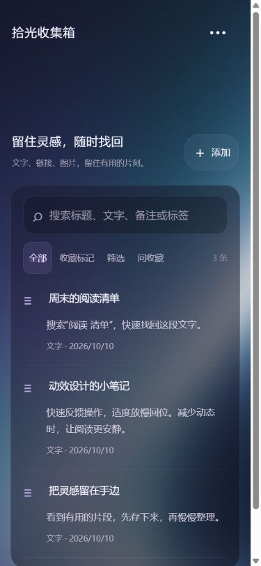

02 / ANDROID & WEB · 个人收藏工具
拾光收集箱
留住灵感，随时找回。
收藏文字、链接和图片，从选定资料中整理信息。
Codex 辅助实践本地收藏1.1.0 功能资料
收集之后，还能再找到
收藏、搜索和筛选用于整理日常资料。AI 摘要与标签帮助回顾内容；图片文字识别先显示预览，由使用者决定是否追加到正文。
问答需要先选择资料。回答带有来源入口，可以返回本地收藏核对上下文。
右侧是使用合成资料的手机尺寸浏览器预览。它展示收藏列表的实际界面，不代表 Android 真机已经验收。

一次资料使用流程
让 AI 请求保持明确：主动选择要处理的内容，再查看结果和来源。
- 保存收藏添加文字或链接，可附一张图片，内容保存在本地。
- 搜索与筛选按标题、文字、备注或标签找回资料。
- 识别与整理主动发起图片文字识别，预览后选择追加；也可生成摘要与标签。
- 选定资料问答选择 1–5 条资料后提问，打开回答来源核对，不自动读取整个收藏库。
- 备份与恢复导出本地资料备份，支持包含图片的备份与导入。
我的参与方式
我从喜欢的设计和个人收藏需求出发，通过与 Codex 沟通来制作应用，查看结果并反馈想法。代码和技术实现主要由 AI 完成。这里整理应用用途、项目选择和已有验证的边界，作为学习过程中的实践记录。
项目中的实现选择
Web / Android本地持久化图片与备份DeepSeek Flash
当前方案让 Android 使用自己的模型密钥独立请求服务，Web 使用同源开发中转预览；无账号或云端收藏数据库。未配置模型时仍可使用本地收藏。
一个具体取舍：问答只发送主动勾选的文字资料，不自动发送图片、抓取链接或读取整个收藏库。处理范围更清楚，回答仍需要结合来源人工检查。
验证与仍有的限制
1.1.0 项目记录包含业务与接口测试，以及真实浏览器中的图片保存、备份恢复、文字识别预览、问答来源检查和刷新恢复。Web 与 Android 构建、签名检查已有记录，也使用合成资料验证过模型请求。
Android 真机的密钥保存、移动网络请求、系统选图、覆盖安装后保留资料和性能仍待验收。浏览器结果与构建成功不能替代这些检查。OCR 和问答可能出错，需要人工核对。本页不提供私人安装包或在线模型体验。
联系 cxf
正在寻找实习机会，欢迎聊聊 Vibe Coding 与 AI 应用实践。
974250837@qq.com